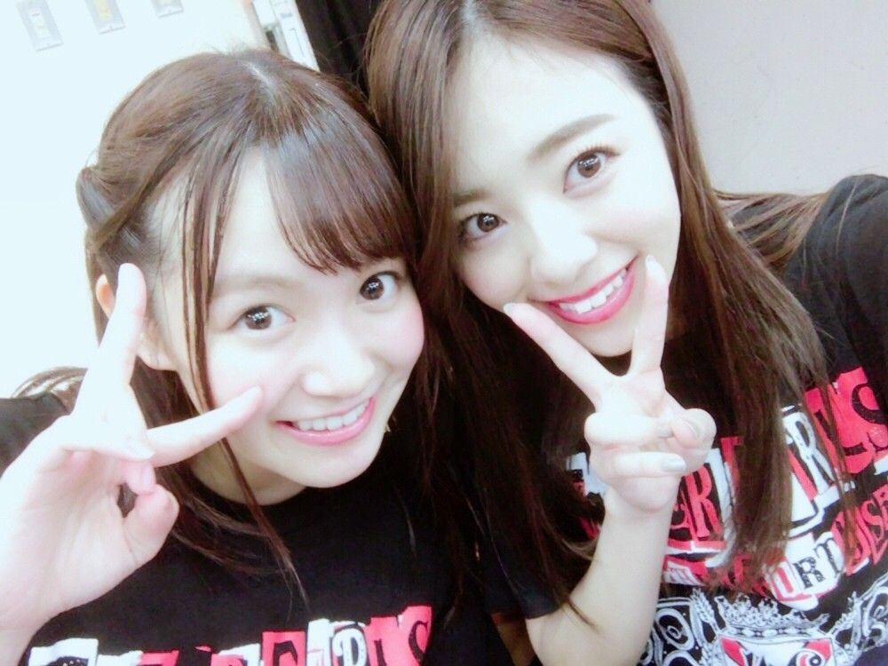
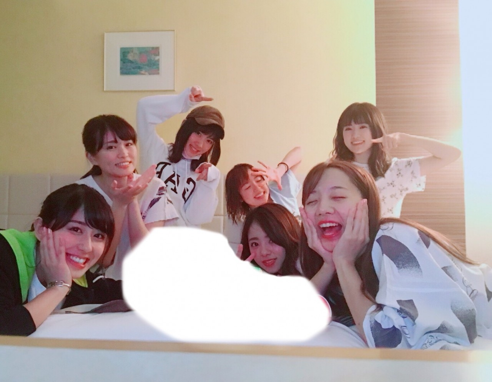
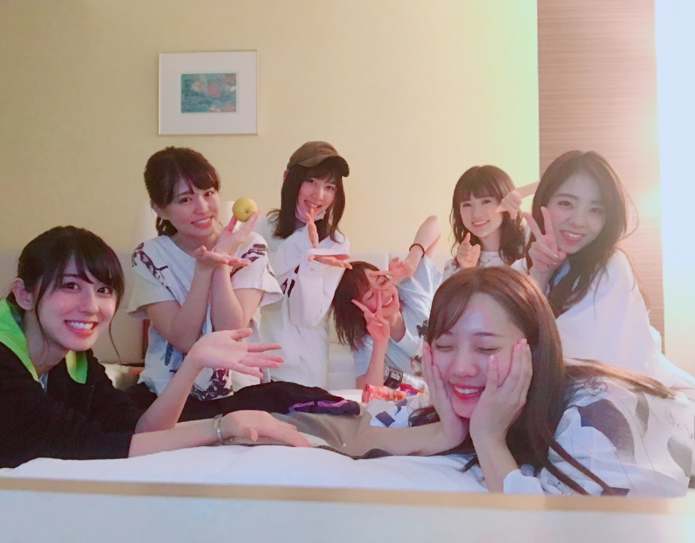
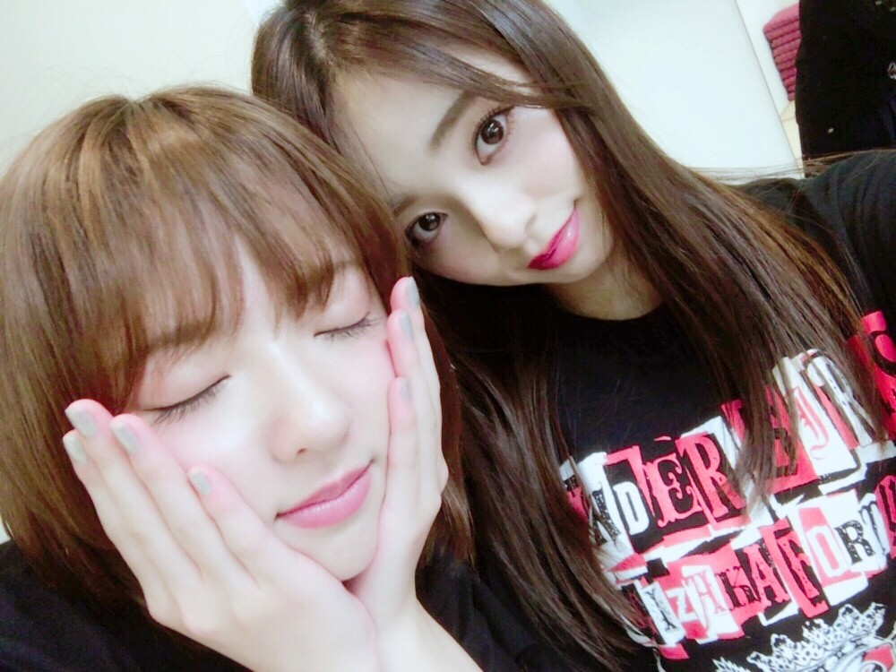

アンダーライブ九州ツアー。
お疲れ様でした‼︎

片手ビームめぇちゃん。
九州ツアー本当に良かったと思います。
今回のアンダラは18thの「アンダー」と言う曲をしょってのライブでした。
この歌の歌詞は私達にとって少し重いと言いますか，「歌いたい‼︎」って思うまでに時間がかかった曲で...
色々な思いを伝える様なライブになったかと思います。
でも前半戦は結構ガンガンな感じで( ´ ▽ `）...私は凄く好きでした♪
1.自由の彼方
2.嫉妬の権利
3.不等号
4.あの日僕は咄嗟に嘘を付いた
5.別れ際もっと好きになる
6.ブランコ
これぞアンダーライブや～♡
って感じのセトリ。良い。
そしてユニットコーナーで、「女は1人じゃ眠れない」を6人でやりました。
（ろってぃー，優里，まあや，ザキ，みりあ，蘭世）
私とまあやとザキのソロダンスがあったり，サビの振り付けも皆で頑張ったり♬ かなりやってて楽しかったです！
後ですね～，ご飯が美味しかったー。
そして鹿児島に姉が見に来てくれたんですよ(*^_^*)
皆さん本当にありがとうございました‼︎
皆さんの応援は本当に支えになっています。これからもよろしくお願い致します(*^o^*)
ツアー中に誕生日を迎えた能條。
沢山のグミを持ち0時ぴったりに部屋に侵入♡


何だか青春してるみたいで本当に楽しかったです♡
改めてお誕生日おめでとう。
そしてタイトルにあった癒しと言うのは... 東京に戻ってそのままお仕事だったんだけど、まあやが急なお手紙をくれて♡ 私と能條とちーに1人ずつ配ってて可愛かった。。
ちゃんとチューリップの絵も添えてました♡

という事で，次は東京ドームですね‼︎
頑張ります。